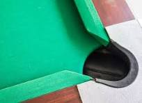
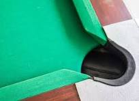

World Snooker Championship
El torneo más prestigioso del snooker profesional, celebrado en Sheffield.
Ranking
El torneo más prestigioso del snooker profesional, celebrado en Sheffield.
Ranking
Uno de los torneos de la Triple Corona del snooker.
RankingTorneo por invitación con los mejores jugadores del mundo.
InvitaciónLos jugadores de snooker profesionales compiten en el World Snooker Tour, circuito profesional integrado por torneos de ranking mundial y de campeonatos de invitación que se celebran a lo largo de la temporada. Todas las competiciones están abiertas a los jugadores profesionales que están clasificados para el circuito, y también para algunos jugadores amateurs, pero la mayor parte de ellas incluyen una fase de clasificación independiente. Los jugadores pueden acceder al circuito ya sea por su posición en el ranking mundial de la temporada anterior, ya sea ganando campeonatos o ya sea a través de las citas del Challenge Tour o de la Q School. Los jugadores del World Snooker Tour suelen disfrutar de un permiso que dura dos años y les brinda la posibilidad de participar en los torneos que lo conforman.[81] Desde la temporada 2014-15, hay también jugadores a los que se les concede un permiso similar como invitación a participar; la World Snooker Board, que es la que tiene potestad de conceder estos reconocimientos, ha agraciado con uno a jugadores como Steve Davis, James Wattana, Jimmy White y Stephen Hendry. A lo largo de los años, se han organizado también otros circuitos paralelos y de menor rango. En la temporada 1997-98, por ejemplo, se impulsó una estructura de dos niveles en la que tuvo cabida el conocido como WPBSA Minor Tour, de menor rango, con sesis torneos y abierta a todos los profesionales. De forma similar, aunque en este caso tan solo en el Reino Unido, desde aquella temporada existe también el Challenge Tour, que se ha conocido también con los nombres de UK Tour y Players Tour Championship.
La World Professional Billiards and Snooker Association (WPBSA), que se fundó con el nombre de Billiard Players' Association, es el organismo regulador del snooker en todo el mundo. Es dueña y se encarga de publicar las reglas oficiales del deporte y tiene la responsabilidad de tomar decisiones relacionadas con él
El snooker amateur constituye la base del desarrollo del deporte y permite el acceso a competiciones internacionales y profesionales.
El snooker no profesional, incluida las competiciones en las que participan los más jóvenes, queda bajo la jurisdicción de la International Billiards and Snooker Federation (IBSF). Por otra parte, aquellos torneos en los que solo pueden participar los veteranos los gestiona la WPBSA a través del World Seniors Tour. World Disability Billiards and Snooker (WDBS) es una subsidiaria de la WPBSA que se encarga de organizar torneos de snooker y otras disciplinas de billar para personas discapacitadas. El snooker es un deporte abierto tanto a hombres como a mujeres, y tanto unos como otras gozan de las mismas posibilidades de colarse en todos los niveles del deporte. En cualquier caso, y si bien el circuito profesional permite a las mujeres participar, existe también un circuito exclusivamente femenino gestionado por World Women's Snooker —conocido en el pasado como World Ladies Billiards and Snooker Association—, que tiene entre sus objetivos fomentar la inclusión de la mujer. Hoy en día, la ganadora del Campeonato Mundial de Snooker Femenino tiene el derecho a participar durante dos años en el circuito profesional.
 

A nivel amateur, la competición más importante es el Campeonato Mundial de Snooker de la IBSF, mientras que el World Seniors Championship es la cita de mayor relevancia a la que se pueden presentar los veteranos. En el circuito femenino, el principal torneo es el Campeonato Mundial de Snooker Femenino. La vigente campeona es Reanne Evans, que ha retenido el título en doce ocasiones desde que lo ganó por primera vez en 2005. También ha participado en el World Snooker Tour y ha tomado parte en el clasificatorio del Campeonato Mundial de Snooker en cinco ocasiones; en la edición de 2017, llegó a la segunda ronda.[134] La cita de más prestigio del calendario amateur en Inglaterra es el English Amateur Championship, que, estrenado en 1916, es la competición de snooker con más años de historia que aún se sigue jugando.
Algunos jugadores y grupos de aficionados han expresado su preocupación por el elevado número de torneos que se disputan cada temporada.
Varios jugadores, entre los que figuran Ronnie O'Sullivan, Mark Allen y Steve Davis, se han quejado a lo largo de los años de que se juegan demasiados torneos por temporada y que corren el riesgo de quemarse. En 2012, por ejemplo, O'Sullivan participó en menos campeonatos para dedicar más tiempo a sus hijos, y acabó la temporada 2012-13 en el decimonoveno puesto del ranking mundial; tan solo jugó un torneo, el Campeonato Mundial, y lo ganó. Ha deslizado más de una vez la posibilidad de crear un nuevo circuito que, con menos torneos, resultaría beneficioso para el deporte, pero la idea no ha fructificado.


Algunas ligas han permitido a los clubes vetar la participación de mujeres. Un miembro de la organización de la liga de Keighley, por ejemplo, sostuvo que era necesario permitir que tomasen parte equipos conformados únicamente por hombres: «Si perdemos a dos de estos clubes, perderíamos cuatro equipos y no nos lo podemos permitir, porque entonces nos quedaríamos sin liga». Una portavoz de World Women's Snooker señaló que «es decepcionante e inaceptable que en 2019 jugadoras como Rebecca Kenna hayan sufrido prácticas discriminatorias y anticuadas». Un grupo parlamentario integrado por miembros de diferentes partidos políticos británicos manifestó lo siguiente: «Este grupo cree que vetar el juego en un club por el género es arcaico».